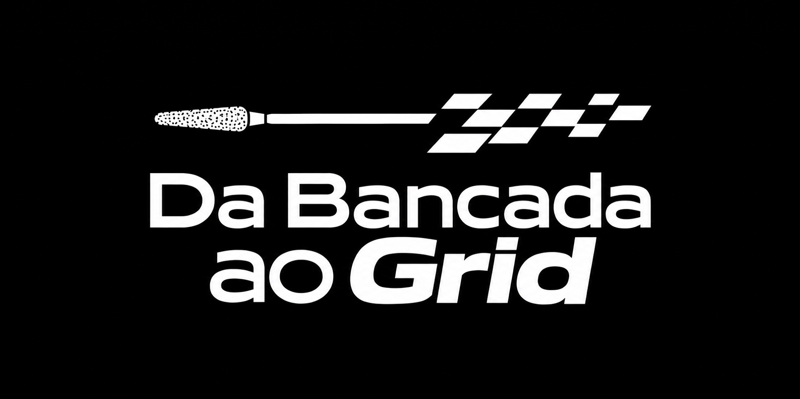
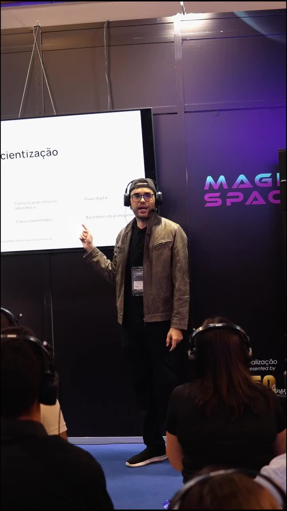

“Me manda sua tabela?”
Sem explicar o que sua entrega inclui, você precisa defender o preço ou ceder no desconto. Aprenda a apresentar seus diferenciais antes da tabela.

Você faz um bom trabalho, mas depende de indicação ou acaba negociando só pelo preço? Descubra quais dentistas buscar, o que publicar e como apresentar uma parceria com o seu laboratório.
Quero aprender a captar dentistasEbook + 4 bônus gratuitos · R$ 47, pagamento único

Por Douglas VinceForward Zone · Marketing no setor protéticoRepresentação visual do ebook. Produto digital em PDF.
Você investe em materiais, cursos e equipamentos. Confere adaptação, contato proximal, oclusão e acabamento antes de entregar.
Mas o dentista recebe só uma foto da peça e sua tabela. Ele ainda não conhece seus critérios de conferência, seu fluxo e o suporte que você oferece.
Se você apresenta apenas o preço, deixa seus diferenciais fora da negociação.
Sem explicar o que sua entrega inclui, você precisa defender o preço ou ceder no desconto. Aprenda a apresentar seus diferenciais antes da tabela.
Fotos de trabalhos não explicam tudo. Planeje conteúdos que respondam às dúvidas dos dentistas e convidem para uma conversa sobre parceria.
Quando uma delas reduz os casos, seu movimento cai. Organize uma rotina para buscar outros dentistas compatíveis com seu laboratório.
Além da estética, o dentista avalia prazo, comunicação, consistência e suporte. Seu conteúdo e sua apresentação precisam explicar como o laboratório trabalha.
No Da Bancada ao Grid, você aprende a usar processos, casos e evidências reais para explicar sua entrega e conduzir a conversa até a avaliação do primeiro caso.
Um passo a passo para quem entende de prótese e precisa começar no marketing. Com exemplos do setor, exercícios e orientações para aplicar ao seu laboratório.
Escolha o perfil de dentista, a região e os tipos de caso que fazem sentido para sua especialidade e sua capacidade de produção.
Você preenche: perfil do dentista ideal, serviço prioritário e objetivos de divulgação.
Transforme dúvidas dos dentistas e etapas reais do laboratório em conteúdo. Aprenda a explicar sua especialidade, seu processo e o que a parceria inclui.
Você organiza: temas de conteúdo, provas do seu trabalho e a apresentação da parceria.
Entenda como uma página e um formulário podem apresentar seu serviço e identificar quem tem perfil para trabalhar com você. Depois, veja como planejar um teste de anúncios.
Você planeja: apresentação do serviço, perguntas do formulário e critérios para uma campanha.
Aprenda o que perguntar, como apresentar uma proposta e quando retornar ao dentista. Registre as oportunidades para não deixar uma negociação esquecida no WhatsApp.
Você define: etapas de atendimento, próxima ação e indicadores para avaliar o que funciona.
Use os modelos para registrar sua estratégia, orientar a equipe, planejar publicações e organizar a página e as perguntas para novos contatos.
Quer explicar sua especialidade, apresentar seus trabalhos e prospectar dentistas além das indicações que já recebe.
Quer diminuir a dependência de poucas clínicas e organizar a divulgação sem prometer o que sua equipe não consegue entregar.
Quer saber por onde começar, o que preparar antes de anunciar e como avaliar o trabalho de quem cuida do seu marketing.
Cerâmica, prótese total, sobre implantes ou fluxo digital: adapte os exercícios à sua especialidade. O foco do ebook é marketing e vendas do laboratório.
Palestra de marketing digital no CIPRO e participação em capítulo do livro do evento.
Posicionamento, cliente ideal, conteúdo e o caminho entre a divulgação e a conversa comercial.
Uma contribuição sobre marketing digital aplicado à realidade dos técnicos em prótese dentária.
Além do conteúdo, você recebe acesso à comunidade e às consultorias abaixo, sem custo adicional na oferta.
Troque experiências sobre divulgação, atendimento e captação de dentistas com outros participantes.
Tire dúvidas pelo WhatsApp em grupo sobre marketing e a aplicação do conteúdo ao seu laboratório.
Receba orientação para organizar o planejamento de marketing conforme as prioridades do seu laboratório.
Conte com orientação para avaliar o público, a mensagem e o direcionamento das campanhas do laboratório.
Comunidade: R$ 197,00 / ano + consultoria em grupo: R$ 497,00 / mês + planejamento: R$ 700,00 / mês + consultoria de campanhas: R$ 700,00.
A soma considera uma unidade de cada valor informado, com as periodicidades indicadas. Ela não representa uma mensalidade do pacote.São exemplos de ofertas públicas com formatos e escopos próprios. Os valores não são uma média de mercado nem a precificação dos nossos bônus.
Preços consultados em 02/10/2026. Expert Digital · Marketing PRO · Review Comunicação · Eduardo Brambilla.
Esse é o preço publicado da mentoria de Eduardo Brambilla, com 12 sessões individuais e suporte contínuo.
Para começar a entender e aplicar o marketing no seu laboratório, sua porta de entrada aqui custa apenas R$ 47,00.
Saiba quais dentistas procurar, o que publicar e como apresentar seu laboratório. Tenha orientação para aplicar o planejamento.
O ebook inclui exercícios e modelos para montar sua primeira versão da estratégia. Os quatro bônus acima entram na oferta sem custo adicional.
Marketing e vendas para técnicos em prótese dentária.
A venda ainda não está aberta.
Produto digital. O mockup não representa um livro físico.
Os períodos de acesso, a agenda e as condições de participação nos acompanhamentos serão apresentados na abertura das inscrições.
Você pode começar do básico. O material explica os conceitos a partir de decisões reais do laboratório e inclui um glossário para consultar durante a leitura.
Sim. Os exercícios devem ser adaptados à sua equipe, à sua região, às suas especialidades e à capacidade de entrega. Você pode começar com um serviço e um perfil de dentista.
O conteúdo é sobre marketing, posicionamento e vendas B2B. Ele usa a realidade da prótese para ajudar você a comunicar seu trabalho e organizar o caminho comercial.
As primeiras etapas envolvem diagnóstico, cliente ideal, oferta e conteúdo. O capítulo de anúncios vem depois, para orientar um teste planejado quando a estrutura estiver pronta.
O ebook digital em PDF, com 62 páginas, 15 capítulos, 12 exercícios e 4 modelos. A oferta também inclui os quatro bônus: comunidade Da Bancada ao Grid, consultoria em grupo pelo WhatsApp com Douglas Vince, planejamento acompanhado por especialista e consultoria de campanhas. O produto não inclui livro impresso.
Os quatro bônus são gratuitos nesta oferta. Os preços anuais e mensais apresentados são valores atribuídos aos bônus, não cobranças recorrentes do pacote. Os períodos de participação, a agenda e as condições dos acompanhamentos serão informados na abertura das inscrições.
O material oferece orientação e ferramentas de planejamento. A conquista de parceiros depende da aplicação, da adequação da oferta, do mercado e do atendimento e da entrega do laboratório.
A venda ainda não está aberta. Quando estiver disponível, o botão da oferta encaminhará ao checkout, onde você poderá consultar as formas de pagamento e as condições de acesso.